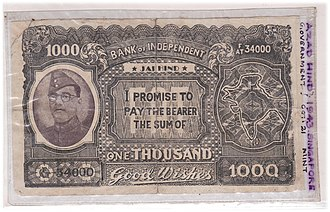

Subhas Chandra Bose
 Subhas Chandra Bose 23 January 1897 - 18 August 1945 was an Indian nationalist whose defiance of British authority in India made him a hero among Indians,but his wartime alliances with Nazi Germany and Imperial Japan left a legacy vexed by authoritarianism, anti-Semitism,and military failure.The honorific Netaji (Hindustani: "Respected Leader") was first applied to Bose in Germany in early 1942—by the Indian soldiers of the Indische Legion and by the German and Indian officials in the Special Bureau for India in Berlin. It is now used throughout India.
Subhas Chandra Bose 23 January 1897 - 18 August 1945 was an Indian nationalist whose defiance of British authority in India made him a hero among Indians,but his wartime alliances with Nazi Germany and Imperial Japan left a legacy vexed by authoritarianism, anti-Semitism,and military failure.The honorific Netaji (Hindustani: "Respected Leader") was first applied to Bose in Germany in early 1942—by the Indian soldiers of the Indische Legion and by the German and Indian officials in the Special Bureau for India in Berlin. It is now used throughout India.
Subhas Bose was born into wealth and privilege in a large Bengali family in Orissa during the British Raj. The early recipient of an Anglocentric education, he was sent after college to England to take the Indian Civil Service examination. He succeeded with distinction in the vital first exam but demurred at taking the routine final exam, citing nationalism to be a higher calling. Returning to India in 1921, Bose joined the nationalist movement led by Mahatma Gandhi and the Indian National Congress. He followed Jawaharlal Nehru to leadership in a group within the Congress which was less keen on constitutional reform and more open to socialism.Bose became Congress president in 1938. After reelection in 1939, differences arose between him and the Congress leaders, including Gandhi, over the future federation of British India and princely states, but also because discomfort had grown among the Congress leadership over Bose's negotiable attitude to non-violence, and his plans for greater powers for himself.After the large majority of the Congress Working Committee members resigned in protest Bose resigned as president and was eventually ousted from the party.
In April 1941 Bose arrived in Nazi Germany, where the leadership offered unexpected but equivocal sympathy for India's independence.German funds were employed to open a Free India Centre in Berlin. A 3,000-strong Free India Legion was recruited from among Indian POWs captured by Erwin Rommel's Afrika Korps to serve under Bose.Although peripheral to their main goals, the Germans inconclusively considered a land invasion of India throughout 1941. By the spring of 1942, the German army was mired in Russia and Bose became keen to move to southeast Asia, where Japan had just won quick victories.Adolf Hitler during his only meeting with Bose in late May 1942 offered to arrange a submarine.During this time, Bose became a father; his wife,or companion,Emilie Schenkl, gave birth to a baby girl.Identifying strongly with the Axis powers, Bose boarded a German submarine in February 1943.Off Madagascar, he was transferred to a Japanese submarine from which he disembarked in Japanese-held Sumatra in May 1943.
With Japanese support, Bose revamped the Indian National Army (INA), which comprised Indian prisoners of war of the Indian Army who had been captured by the Japanese in the Battle of Singapore.A Provisional Government of Free India was declared on the Japanese-occupied Andaman and Nicobar Islands and was nominally presided by Bose.Although Bose was unusually driven and charismatic, the Japanese considered him to be militarily unskilled,and his soldierly effort was short-lived. In late 1944 and early 1945, the Indian Army reversed the Japanese attack on India. Almost half the Japanese forces and the participating INA contingent were killed.The remaining INA was driven down the Malay Peninsula and surrendered with the recapture of Singapore. Bose chose to escape to Manchuria to seek a future in the Soviet Union which he believed to have turned anti-British. He died from third-degree burns received when his overloaded plane crashed in Japanese Taiwan on August 18, 1945.[ae] Some Indians did not believe that the crash had occurred,expecting Bose to return to secure India's independence. The Indian National Congress, the main instrument of Indian nationalism, praised Bose's patriotism but distanced itself from his tactics and ideology.The British Raj, never seriously threatened by the INA,charged 300 INA officers with treason in the INA trials, but eventually backtracked in the face of opposition by the Congress,[am] and a new mood in Britain for rapid decolonisation in India.Bose's legacy is mixed. Among many in India, he is the muscular hero, his saga serving as a would-be counterpoise to the many actions of regeneration, negotiation, and reconciliation over a quarter-century through which the independence of India was achieved.His collaborations with Japanese Fascism and Nazism pose serious ethical dilemmas,especially his reluctance to publicly criticize the worst excesses of German anti-Semitism from 1938 onwards or to offer refuge in India to its victims.
- Biography
- 1897-1921: Early life
- 1921-1932: Indian National Congress
- 1933-1937: Illness, Austria, Emilie Schenkl
- 1937-1940: Indian National Congress
- 1941: Escape to Nazi Germany
- 1941-1943: Collaboration with Nazi Germany
- 1943-1945: Japanese-occupied Asia
- 18 August 1945: Death
- Ideology
- Quotes
- Legacy
- Memorials
- In popular media
- See also
- Footnotes
- Notes
- References
- Bibliography
- Further reading
- External links
Biography
1897-1921: Early life
Subhas Chandra Bose was born to Prabhavati Bose and Janakinath Bose on 23 January 1897 in Cuttack—in what is today the state of Odisha in India, but was then the Orissa Division of Bengal Province in British India. Prabhavati, or familiarly Mā jananī, the anchor of family life, had her first child at age 14 and 13 children thereafter. Subhas was the ninth child and the sixth son. Jankinath, a successful lawyer and government pleader, was loyal to the government of British India and scrupulous about matters of language and the law. A self-made man from the rural outskirts of Calcutta, he had remained in touch with his roots, returning annually to his village during the pooja holidays.
Eager to join his five school-going older brothers, Subhas entered the Baptist Mission's Protestant European School in Cuttack in January 1902.[7] English was the medium of all instruction in the school, the majority of the students being European or Anglo-Indians of mixed British and Indian ancestry.[65] The curriculum included English—correctly written and spoken—Latin, the Bible, good manners, British geography, and British History; no Indian languages were taught.[65][7] The choice of the school was Janakinath's, who wanted his sons to speak flawless English with flawless intonation, believing both to be important for access to the British in India.[69] The school contrasted with Subhas's home, where only Bengali was spoken. At home, his mother worshipped the Hindu goddesses Durga and Kali, told stories from the epics Mahabharata and Ramayana, and sang Bengali religious songs.[7] From her, Subhas imbibed a nurturing spirit, looking for situations in which to help people in distress, preferring gardening around the house to joining in sports with other boys.[8] His father, who was reserved in manner and busy with professional life, was a distant presence in a large family, causing Subhas to feel he had a nondescript childhood.[70] Still, Janakinath read English literature avidly—John Milton, William Cowper, Matthew Arnold, and Shakespeare's Hamlet being among his favourites; several of his sons were to become English literature enthusiasts like him.
In 1909 the 12-year-old Subhas Bose followed his five brothers to the Ravenshaw Collegiate School in Cuttack.[8] Here, Bengali and Sanskrit were also taught, as were ideas from Hindu scriptures such as the Vedas and the Upanishads not usually picked up at home.[8] Although his western education continued apace, he began to wear Indian clothes and engage in religious speculation. To his mother, he wrote long letters which displayed acquaintance with the ideas of the Bengali mystic Ramakrishna Paramahamsa and his disciple Swami Vivekananda, and the novel Ananda Math by Bankim Chandra Chatterjee, popular then among young Hindu men.[72] Despite the preoccupation, Subhas was able to demonstrate an ability when needed to focus on his studies, to compete, and to succeed in exams. In 1912, he secured the second position in the matriculation examination conducted under the auspices of the University of Calcutta.[73]
Subhas Bose followed his five brothers again 1913 to Presidency College, Calcutta, the historic and traditional college for Bengal's upper-caste Hindu men.[73][74] He chose to study philosophy, his readings including Kant, Hegel, Bergson and other Western philosophers.[75] A year earlier, he had befriended Hemanta Kumar Sarkar, a confidant and partner in religious yearnings.[76] At Presidency, their emotional ties grew stronger.[76] In the fanciful language of religious imagery, they declared their pure love for each other.[76] In the long vacations of 1914, they traveled to northern India for several months to search for a spiritual guru to guide them.[76] Subhas's family was not told clearly about the trip, leading them to think he had run away. During the trip, in which the guru proved elusive, Subhas came down with typhoid fever.[76] His absence caused emotional distress to his parents, leading both parents to break down upon his return.[76] Heated words were exchanged between Janakinath and Subhas. It took the return of Subhas's favorite brother, Sarat Chandra Bose, from law studies in England for the tempers to subside. Subhas returned to presidency and busied himself with studies, debating and student journalism.[76]
In February 1916 Bose was alleged to have masterminded,[66] or participated in, an incident involving E. F. Oaten, Professor of History at Presidency.[9] Before the incident, it was claimed by the students, Oaten had made rude remarks about Indian culture, and collared and pushed some students; according to Oaten, the students were making an unacceptably loud noise just outside his class.[9] A few days later, on 15 February, some students accosted Oaten on a stairway, surrounded him, beat him with sandals, and took to flight.[9] An inquiry committee was constituted. Although Oaten, who was unhurt, could not identify his assailants, a college servant testified to seeing Subhas Bose among those fleeing, confirming for the authorities what they had determined to be the rumor among the students.[9] Bose was expelled from the college and rusticated from University of Calcutta.[77] The incident shocked Calcutta and caused anguish to Bose's family.[66] He was ordered back to Cuttack. His family's connections were employed to pressure Asutosh Mukherjee, the Vice-Chancellor of Calcutta University.[77] Despite this, Subhas Bose's expulsion remained in place until 20 July 1917, when the Syndicate of Calcutta University granted him permission to return, but to another college.[10] He joined Scottish Church College, receiving his B.A. in 1918 in the First Class with honours in philosophy, placing second among all philosophy students in Calcutta University.[78]
At his father's urging, Subhas Bose agreed to travel to England to prepare and appear for the Indian Civil Services (ICS) examination.[79] Arriving in London on 20 October 1919, Subhas readied his application for the ICS.[80] For his references he put down Lord Sinha of Raipur, Under Secretary of State for India, and Bhupendranath Basu, a wealthy Calcutta lawyer who sat on the Council of India in London.[79] Bose was eager also to gain admission to a college at the University of Cambridge.[81] It was past the deadline for admission.[81] He sought help from some Indian students and from the Non-Collegiate Students Board. The Board offered the university's education at an economical cost without formal admission to a college. Bose entered the register of the university on 19 November 1919 and simultaneously set about preparing for the Civil Service exams.[81] He chose the Mental and Moral Sciences Tripos at Cambridge,[81] its completion requirement reduced to two years on account of his Indian B. A.[82]
There were six vacancies in the ICS.[83] Subhas Bose took the open competitive exam for them in August 1920 and was placed fourth.[83] This was a vital first step.[83] Still remaining was a final examination in 1921 on more topics on India, including the Indian Penal Code, the Indian Evidence Act, Indian history, and an Indian language.[83] Successful candidates had also to clear a riding test. Having no fear of these subjects and being a rider, Subhas Bose felt the ICS was within easy reach.[83] Yet between August 1920 and 1921 he began to have doubts about taking the final examination.[84] Many letters were exchanged with his father and his brother Sarat Chandra Bose back in Calcutta.[85] In one letter to Sarat, Subhas wrote,
"But for a man of my temperament who has been feeding on ideas that might be called eccentric—the line of least resistance is not the best line to follow ... The uncertainties of life are not appalling to one who has not, at heart, worldly ambitions. Moreover, it is not possible to serve one's country in the best and fullest manner if one is chained on to the civil service."[85]
In April 1921, Subhas Bose made his decision firm not to take the final examination for the ICS and wrote to Sarat informing him of the same, apologizing for the pain he would cause to his father, his mother, and other members of his family.[86] On 22 April 1921, he wrote to the Secretary of State for India, Edwin Montagu, stating, "I wish to have my name removed from the list of probationers in the Indian Civil Service."[87] The following day he wrote again to Sarat:
I received a letter from mother saying that in spite of what father and others think she prefers the ideals for which Mahatma Gandhi stands. I cannot tell you how happy I have been to receive such a letter. It will be worth a treasure for me as it has removed something like a burden from my mind."[88]
For some time before Subhas Bose had been in touch with C. R. Das, a lawyer who had risen to the helm of politics in Bengal; Das encouraged Subhas to return to Calcutta.[89] With the ICS decision now firmly behind him, Subhas Bose took his Cambridge B.A. Final examinations half-heartedly, passing, but being placed in the Third Class.[88] He prepared to sail for India in June 1921, electing for a fellow Indian student to pick up his diploma.[89]
1921–1932: Indian National Congress
Subhas Bose, aged 24, arrived ashore in India at Bombay on the morning of 16 July 1921 and immediately set about arranging an interview with Mahatma Gandhi. Gandhi, aged 51, was the leader of the non-cooperation movement that had taken India by storm the previous year and in a quarter-century would evolve to secure its independence.[ax][ay] Gandhi happened to be in Bombay and agreed to see Bose that afternoon. In Bose's account of the meeting, written many years later, he pilloried Gandhi with question after question.[91] Bose thought Gandhi's answers were vague, his goals unclear, his plan for achieving them not thought through.[91] Gandhi and Bose differed in this first meeting on the question of means- for Gandhi non-violent means to any end were non-negotiable; in Bose's thought, all means were acceptable in the service of anti-colonial ends.[91] They differed on the question of ends- Bose was attracted to totalitarian models of governance, which were anathematized by Gandhi.[92] According to historian Gordon, "Gandhi, however, set Bose on to the leader of the Congress and Indian nationalism in Bengal, C. R. Das, and in him Bose found the leader whom he sought."[91] Das was more flexible than Gandhi, more sympathetic to the extremism that had attracted idealistic young men such as Bose in Bengal.[91] Das launched Bose into nationalist politics.[91] Bose would work within the ambit of the Indian National Congress politics for nearly 20 years even as he tried to change its course.[91]
He started the newspaper Swaraj and took charge of publicity for the Bengal Provincial Congress Committee.[93] His mentor was Chittaranjan Das who was a spokesman for aggressive nationalism in Bengal. In the year 1923, Bose was elected the President of All India Youth Congress and also the Secretary of Bengal State Congress. He was also the editor of the newspaper "Forward", founded by Chittaranjan Das.[94] Bose worked as the CEO of the Calcutta Municipal Corporation for Das when the latter was elected mayor of Calcutta in 1924.[95] During the same year, when he was leading a protest march in Calcutta, he along with Maghfoor Ahmad Ajazi and other leaders were arrested and put behind bars.[96] In a roundup of nationalists in 1925, Bose was arrested and sent to prison in Mandalay, where he contracted tuberculosis.[97]
In 1927, after being released from prison, Bose became general secretary of the Congress party and worked with Jawaharlal Nehru for independence. In late December 1928, Bose organised the Annual Meeting of the Indian National Congress in Calcutta.[98] His most memorable role was as General officer commanding (GOC) Congress Volunteer Corps.[98] Author Nirad Chaudhuri wrote about the meeting:
Bose organized a volunteer corps in uniform, its officers were even provided with steel-cut epaulettes ... his uniform was made by a firm of British tailors in Calcutta, Harman's. A telegram addressed to him as GOC was delivered to the British General in Fort William and was the subject of a good deal of malicious gossip in the (British Indian) press. Mahatma Gandhi as a sincere pacifist vowed to non-violence, did not like the strutting, clicking of boots, and saluting, and he afterward described the Calcutta session of the Congress as a Bertram Mills circus, which caused a great deal of indignation among the Bengalis.[98]
A little later, Bose was again arrested and jailed for civil disobedience; this time he emerged to become Mayor of Calcutta in 1930.[97]
1933–1937: Illness, Austria, Emilie Schenkl
During the mid-1930s Bose travelled in Europe, visiting Indian students and European politicians, including Benito Mussolini. He observed party organisation and saw communism and fascism in action.[99] In this period, he also researched and wrote the first part of his book The Indian Struggle, which covered the country's independence movement in the years 1920–1934. Although it was published in London in 1935, the British government banned the book in the colony out of fears that it would encourage unrest.[100] Bose was supported in Europe by the Indian Central European Society organized by Otto Faltis from Vienna.[101]
1937–1940: Indian National Congress
In 1938 Bose stated his opinion that the INC "should be organised on the broadest anti-imperialist front with the two-fold objective of winning political freedom and the establishment of a socialist regime."[102] By 1938 Bose had become a leader of national stature and agreed to accept nomination as Congress President. He stood for unqualified Swaraj (self-governance), including the use of force against the British. This meant a confrontation with Mohandas Gandhi, who in fact opposed Bose's presidency,[103] splitting the Indian National Congress party.
 Bose attempted to maintain unity, but Gandhi advised Bose to form his own cabinet. The rift also divided Bose and Nehru; he appeared at the 1939 Congress meeting on a stretcher. He was elected president again over Gandhi's preferred candidate Pattabhi Sitaramayya.[106] U. Muthuramalingam Thevar strongly supported Bose in the intra-Congress dispute. Thevar mobilised all south India votes for Bose.[107] However, due to the manoeuvrings of the Gandhi-led clique in the Congress Working Committee, Bose found himself forced to resign from the Congress presidency.
Bose attempted to maintain unity, but Gandhi advised Bose to form his own cabinet. The rift also divided Bose and Nehru; he appeared at the 1939 Congress meeting on a stretcher. He was elected president again over Gandhi's preferred candidate Pattabhi Sitaramayya.[106] U. Muthuramalingam Thevar strongly supported Bose in the intra-Congress dispute. Thevar mobilised all south India votes for Bose.[107] However, due to the manoeuvrings of the Gandhi-led clique in the Congress Working Committee, Bose found himself forced to resign from the Congress presidency.
On 22 June 1939 Bose organised the All India Forward Bloc a faction within the Indian National Congress,[108] aimed at consolidating the political left, but its main strength was in his home state, Bengal. U Muthuramalingam Thevar, who was a staunch supporter of Bose from the beginning, joined the Forward Bloc. When Bose visited Madurai on 6 September, Thevar organised a massive rally as his reception.
When Subhas Chandra Bose was heading to Madurai, on an invitation of Muthuramalinga Thevar to amass support for the Forward Bloc, he passed through Madras and spent three days at Gandhi Peak. His correspondence reveals that despite his clear dislike for British subjugation, he was deeply impressed by their methodical and systematic approach and their steadfastly disciplinarian outlook towards life. In England, he exchanged ideas on the future of India with British Labour Party leaders and political thinkers like Lord Halifax, George Lansbury, Clement Attlee, Arthur Greenwood, Harold Laski, J.B.S. Haldane, Ivor Jennings, G.D.H. Cole, Gilbert Murray and Sir Stafford Cripps.
He came to believe that an independent India needed socialist authoritarianism, on the lines of Turkey's Kemal Atatürk, for at least two decades. For political reasons Bose was refused permission by the British authorities to meet Atatürk at Ankara. During his sojourn in England Bose tried to schedule appointments with several politicians, but only the Labour Party and Liberal politicians agreed to meet with him. Conservative Party officials refused to meet him or show him courtesy because he was a politician coming from a colony. In the 1930s leading figures in the Conservative Party had opposed even Dominion status for India. It was during the Labour Party government of 1945–1951, with Attlee as the Prime Minister, that India gained independence.
On the outbreak of war, Bose advocated a campaign of mass civil disobedience to protest against Viceroy Lord Linlithgow's decision to declare war on India's behalf without consulting the Congress leadership. Having failed to persuade Gandhi of the necessity of this, Bose organised mass protests in Calcutta calling for the removal of the "Holwell Monument", which then stood at the corner of Dalhousie Square in memoriam of those who died in the Black Hole of Calcutta.[109] He was thrown in jail by the British, but was released following a seven-day hunger strike. Bose's house in Calcutta was kept under surveillance by the CID.
1941: Escape to Nazi Germany
 Bose's arrest and subsequent release set the scene for his escape to Nazi Germany, via Afghanistan and the Soviet Union. A few days before his escape, he sought solitude and, on this pretext, avoided meeting British guards and grew a beard. Late night 16 January 1941, the night of his escape, he dressed as a Pathan (brown long coat, a black fez-type coat and broad pyjamas) to avoid being identified. Bose escaped from under British surveillance from his Elgin Road house in Calcutta on the night of 17 January 1941, accompanied by his nephew Sisir Kumar Bose, later reaching Gomoh Railway Station (now Netaji Subhas Chandra Bose Gomoh Station) in the then state of Bihar (now Jharkhand), India.
Bose's arrest and subsequent release set the scene for his escape to Nazi Germany, via Afghanistan and the Soviet Union. A few days before his escape, he sought solitude and, on this pretext, avoided meeting British guards and grew a beard. Late night 16 January 1941, the night of his escape, he dressed as a Pathan (brown long coat, a black fez-type coat and broad pyjamas) to avoid being identified. Bose escaped from under British surveillance from his Elgin Road house in Calcutta on the night of 17 January 1941, accompanied by his nephew Sisir Kumar Bose, later reaching Gomoh Railway Station (now Netaji Subhas Chandra Bose Gomoh Station) in the then state of Bihar (now Jharkhand), India.
He journeyed to Peshawar with the help of the Abwehr, where he was met by Akbar Shah, Mohammed Shah and Bhagat Ram Talwar. Bose was taken to the home of Abad Khan, a trusted friend of Akbar Shah's. On 26 January 1941, Bose began his journey to reach Russia through British India's North West frontier with Afghanistan. For this reason, he enlisted the help of Mian Akbar Shah, then a Forward Bloc leader in the North-West Frontier Province. Shah had been out of India en route to the Soviet Union, and suggested a novel disguise for Bose to assume. Since Bose could not speak one word of Pashto, it would make him an easy target of Pashto speakers working for the British. For this reason, Shah suggested that Bose act deaf and dumb, and let his beard grow to mimic those of the tribesmen. Bose's guide Bhagat Ram Talwar, unknown to him, was a Soviet agent.
Supporters of the Aga Khan III helped him across the border into Afghanistan where he was met by an Abwehr unit posing as a party of road construction engineers from the Organization Todt who then aided his passage across Afghanistan via Kabul to the border with the Soviet Union. After assuming the guise of a Pashtun insurance agent ("Ziaudddin") to reach Afghanistan, Bose changed his guise and travelled to Moscow on the Italian passport of an Italian nobleman "Count Orlando Mazzotta". From Moscow, he reached Rome, and from there he travelled to Nazi Germany.[113][114][116] Once in Russia the NKVD transported Bose to Moscow where he hoped that Russia's historical enmity to British rule in India would result in support for his plans for a popular rising in India. However, Bose found the Soviets' response disappointing and was rapidly passed over to the German Ambassador in Moscow, Count von der Schulenburg. He had Bose flown on to Berlin in a special courier aircraft at the beginning of April where he was to receive a more favourable hearing from Joachim von Ribbentrop and the Foreign Ministry officials at the Wilhelmstrasse.
1941–1943: Collaboration with Nazi Germany
 In Germany, he was attached to the Special Bureau for India under Adam von Trott zu Solz which was responsible for broadcasting on the German-sponsored Azad Hind Radio.[118] He founded the Free India Center in Berlin, and created the Indian Legion (consisting of some 4500 soldiers) out of Indian prisoners of war who had previously fought for the British in North Africa prior to their capture by Axis forces. The Indian Legion was attached to the Wehrmacht, and later transferred to the Waffen SS. Its members swore the following allegiance to Hitler and Bose: "I swear by God this holy oath that I will obey the leader of the German race and state, Adolf Hitler, as the commander of the German armed forces in the fight for India, whose leader is Subhas Chandra Bose". This oath clearly abrogated control of the Indian legion to the German armed forces whilst stating Bose's overall leadership of India. He was also, however, prepared to envisage an invasion of India via the USSR by Nazi troops, spearheaded by the Azad Hind Legion; many have questioned his judgment here, as it seems unlikely that the Germans could have been easily persuaded to leave after such an invasion, which might also have resulted in an Axis victory in the War.
In Germany, he was attached to the Special Bureau for India under Adam von Trott zu Solz which was responsible for broadcasting on the German-sponsored Azad Hind Radio.[118] He founded the Free India Center in Berlin, and created the Indian Legion (consisting of some 4500 soldiers) out of Indian prisoners of war who had previously fought for the British in North Africa prior to their capture by Axis forces. The Indian Legion was attached to the Wehrmacht, and later transferred to the Waffen SS. Its members swore the following allegiance to Hitler and Bose: "I swear by God this holy oath that I will obey the leader of the German race and state, Adolf Hitler, as the commander of the German armed forces in the fight for India, whose leader is Subhas Chandra Bose". This oath clearly abrogated control of the Indian legion to the German armed forces whilst stating Bose's overall leadership of India. He was also, however, prepared to envisage an invasion of India via the USSR by Nazi troops, spearheaded by the Azad Hind Legion; many have questioned his judgment here, as it seems unlikely that the Germans could have been easily persuaded to leave after such an invasion, which might also have resulted in an Axis victory in the War.
Soon, according to historian Romain Hayes, "the (German) Foreign Office procured a luxurious residence for (Bose) along with a butler, cook, gardener, and an SS-chauffeured car. Emilie Schenkl moved in openly with him. The Germans, aware of the nature of the relationship, refrained from any involvement."[119] However, most of the staff in the Special Bureau for India, which had been set up to aid Bose, did not get along with Emilie.[120] In particular Adam von Trott, Alexander Werth and Freda Kretschemer, according to historian Leonard A. Gordon, "appear to have disliked her intensely. They believed that she and Bose were not married and that she was using her liaison with Bose to live an especially comfortable life during the hard times of war" and that differences were compounded by issues of class.[120] In November 1942, Schenkl gave birth to their daughter. In February 1943, Bose left Schenkl and their baby daughter and boarded a German submarine to travel, via transfer to a Japanese submarine, to Japanese-occupied southeast Asia.
In all, 3,000 Indian prisoners of war signed up for the Free India Legion. But instead of being delighted, Bose was worried. A left-wing admirer of Russia, he was devastated when Hitler's tanks rolled across the Soviet border. Matters were worsened by the fact that the now-retreating German army would be in no position to offer him help in driving the British from India. When he met Hitler in May 1942, his suspicions were confirmed, and he came to believe that the Nazi leader was more interested in using his men to win propaganda victories than military ones. So, in February 1943, Bose boarded a German U-boat and left for Japan. This left the men he had recruited leaderless and demoralised in Germany.
1943–1945: Japanese-occupied Asia
 In 1943, after being disillusioned that Germany could be of any help in gaining India's independence, Bose left for Japan. He travelled with the German submarine U-180 around the Cape of Good Hope to the southeast of Madagascar, where he was transferred to the I-29 for the rest of the journey to Imperial Japan. This was the only civilian transfer between two submarines of two different navies in World War II.
In 1943, after being disillusioned that Germany could be of any help in gaining India's independence, Bose left for Japan. He travelled with the German submarine U-180 around the Cape of Good Hope to the southeast of Madagascar, where he was transferred to the I-29 for the rest of the journey to Imperial Japan. This was the only civilian transfer between two submarines of two different navies in World War II.
The Indian National Army (INA) was the brainchild of Japanese Major (and post-war Lieutenant-General) Iwaichi Fujiwara, head of the Japanese intelligence unit Fujiwara Kikan. Fujiwara's mission was "to raise an army which would fight alongside the Japanese army."[122][123] He first met Pritam Singh Dhillon, the president of the Bangkok chapter of the Indian Independence League, and through Pritam Singh's network recruited a captured British Indian army captain, Mohan Singh, on the western Malayan peninsula in December 1941. The First Indian National Army was formed as a result of discussion between Fujiwara and Mohan Singh in the second half of December 1941, and the name chosen jointly by them in the first week of January 1942.
This was along the concept of, and with support of, what was then known as the Indian Independence League headed from Tokyo by expatriate nationalist leader Rash Behari Bose. The first INA was however disbanded in December 1942 after disagreements between the Hikari Kikan and Mohan Singh, who came to believe that the Japanese High Command was using the INA as a mere pawn and propaganda tool. Mohan Singh was taken into custody and the troops returned to the prisoner-of-war camp. However, the idea of an independence army was revived with the arrival of Subhas Chandra Bose in the Far East in 1943. In July, at a meeting in Singapore, Rash Behari Bose handed over control of the organisation to Subhas Chandra Bose. Bose was able to reorganise the fledgling army and organise massive support among the expatriate Indian population in south-east Asia, who lent their support by both enlisting in the Indian National Army, as well as financially in response to Bose's calls for sacrifice for the independence cause. INA had a separate women's unit, the Rani of Jhansi Regiment (named after Rani Lakshmi Bai) headed by Capt. Lakshmi Swaminathan, which is seen as a first of its kind in Asia.
Even when faced with military reverses, Bose was able to maintain support for the Azad Hind movement. Spoken as a part of a motivational speech for the Indian National Army at a rally of Indians in Burma on 4 July 1944, Bose's most famous quote was "Give me blood, and I shall give you freedom!" In this, he urged the people of India to join him in his fight against the British Raj.[citation needed] Spoken in Hindi, Bose's words are highly evocative. The troops of the INA were under the aegis of a provisional government, the Azad Hind Government, which came to produce its own currency, postage stamps, court and civil code, and was recognised by nine Axis states – Germany, Japan, Italian Social Republic, the Independent State of Croatia, Wang Jingwei regime in Nanjing, China, a provisional government of Burma, Manchukuo and Japanese-controlled Philippines. Of those countries, five were authorities established under Axis occupation. This government participated in the so-called Greater East Asia Conference as an observer in November 1943.
The INA's first commitment was in the Japanese thrust towards Eastern Indian frontiers of Manipur. INA's special forces, the Bahadur Group, were involved in operations behind enemy lines both during the diversionary attacks in Arakan, as well as the Japanese thrust towards Imphal and Kohima.
The Japanese also took possession of Andaman and Nicobar Islands in 1942 and a year later, the Provisional Government and the INA were established in the Andaman and Nicobar Islands with Lt Col. A.D. Loganathan appointed its Governor General. The islands were renamed Shaheed (Martyr) and Swaraj (Independence). However, the Japanese Navy remained in essential control of the island's administration. During Bose's only visit to the islands in early 1944, apparently in the interest of shielding Bose from attaining a full knowledge of ultimate Japanese intentions, Bose's Japanese hosts carefully isolated him from the local population. At that time the island's Japanese administration had been torturing the leader of the island's Indian Independence League, Diwan Singh, who later died of his injuries in the Cellular Jail. During Bose's visit to the islands several locals attempted to alert Bose to Singh's plight, but apparently without success. During this time Loganathan became aware of his lack of any genuine administrative control and resigned in protest as Governor General, later returning to the Government's headquarters in Rangoon.
On the Indian mainland, an Indian Tricolour, modelled after that of the Indian National Congress, was raised for the first time in the town of Moirang, in Manipur, in north-eastern India. The adjacent towns of Kohima and Imphal were then encircled and placed under siege by divisions of the Japanese Army, working in conjunction with the Burmese National Army, and with Brigades of the INA, known as the Gandhi and Nehru Brigades. This attempt at conquering the Indian mainland had the Axis codename of Operation U-Go.
During this operation, On 6 July 1944, in a speech broadcast by the Azad Hind Radio from Singapore, Bose addressed Mahatma Gandhi as the "Father of the Nation" and asked for his blessings and good wishes for the war he was fighting. This was the first time that Gandhi was referred to by this appellation.[131] The protracted Japanese attempts to take these two towns depleted Japanese resources, with Operation U-Go ultimately proving unsuccessful. Through several months of Japanese onslaught on these two towns, Commonwealth forces remained entrenched in the towns. Commonwealth forces then counter-attacked, inflicting serious losses on the Axis led forces, who were then forced into a retreat back into Burmese territory. After the Japanese defeat at the battles of Kohima and Imphal, Bose's Provisional Government's aim of establishing a base in mainland India was lost forever.
Still the INA fought in key battles against the British Indian Army in Burmese territory, notable in Meiktilla, Mandalay, Pegu, Nyangyu and Mount Popa. However, with the fall of Rangoon, Bose's government ceased to be an effective political entity.[citation needed] A large proportion of the INA troops surrendered under Lt Col Loganathan. The remaining troops retreated with Bose towards Malaya or made for Thailand. Japan's surrender at the end of the war also led to the surrender of the remaining elements of the Indian National Army. The INA prisoners were then repatriated to India and some tried for treason.